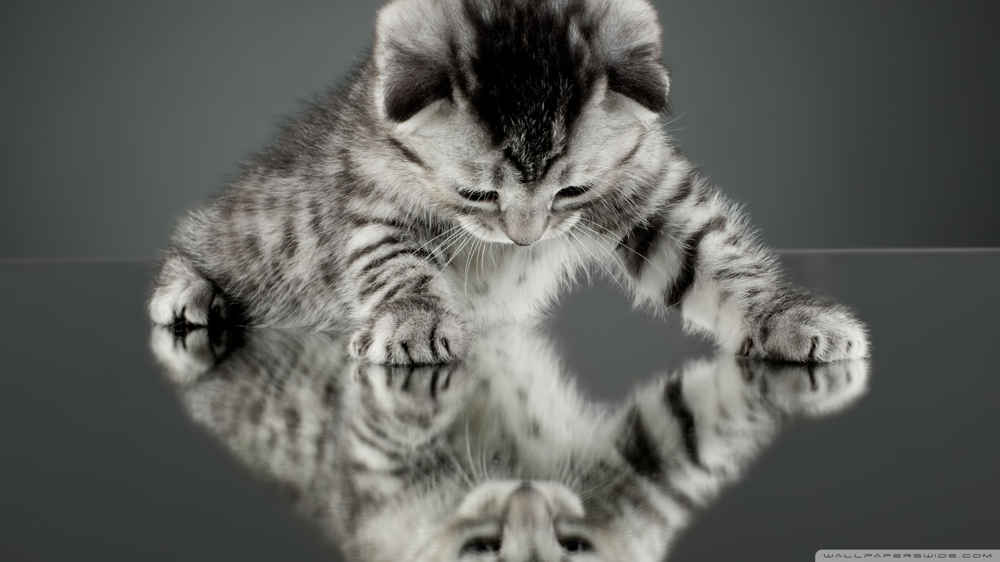

I used to work as a reporter for a regional television station in Düsseldorf and had prepared a piece about the imminent withdrawal of British troops from Germany. On August 19, a Monday, her Majesty's Armed Forces were to announce at a press conference what was to become of the more than 60 base locations of the British Army of the Rhine.
